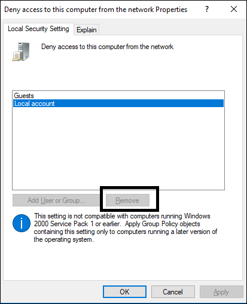

Cannot Launch the System Web Page with HTTP 500 Internal Server Error
This error may be due to the changed website/application user password or due to installation of an updated .Net Framework version (version 4.7.2).
Solution 1: On Windows 10 operating systems, ensure that the website/web application user or the user group to which the website/web application user belongs to is not added in local policy for Deny access to this computer from the network. Otherwise, you cannot create a web application under this website (which is created from local windows user).
For this you must remove the web site user (local windows user) from Deny access to this computer from the network. In case you don’t have rights to remove local account as shown in the image, do the following steps to remove the required account (for example, Local account):

- Open Command Prompt with admin rights and navigate to any known directory (for example, C:\temp)
- Type: secedit /export /cfg initial.cfg.
- A initial.cfg file is created in the current directory.
- Open initial.cfg in an editor such as Notepad and locate SeDenyNetworkLogonRight.
- Remove Local account (*S-1-5-113) from that list and save initial.cfg file.
- Now type user command:
secedit /configure /db final.db /cfg initial.cfg /overwrite /areas USER_RIGHTS - Type y for confirmation.
- Re-start the computer, if the command gets executed successfully.
- Verify your local policy for Deny access to this computer from the network.
- It is been updated.
- Now create a website using SMC.
Solution 2: Perform the following steps:
- In the SMC tree, from Websites, select the Website/application.
- Click Edit
 .
. - Enter the most recent password.
- Click Save
 .
. - The website/application user password is updated.
- Browse the website/web application to launch the Desigo CC web page.
- (Required only when you still do not get the Desigo CC web page) Configure IIS.
NOTE: A message may display asking you to re-start the computer. - In IIS, check under IIS section, if Application Request Routing is available. If not, you must re-install ARR by executing the ARR setup exe (ARRv3_setup_amd64_en-us.EXE) from the distribution media.
- Reset IIS by typing the iisreset command in the command prompt.
- Launch the SMC.
- In the SMC tree, from Websites, create a website or web application and click the hyperlink to launch the web page. Note that the SMC does not restore the websites or web applications after re-installing IIS; neither can you restore them using IIS. However, these websites and web applications folders are available on the disk.